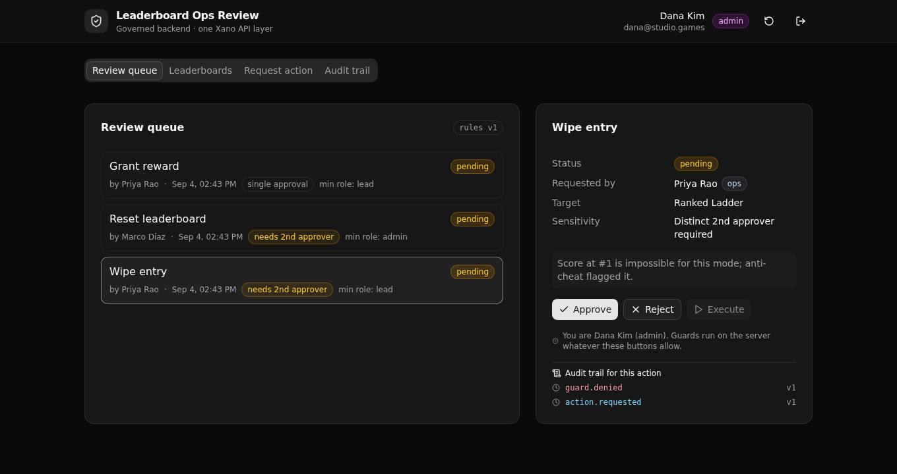

The governed backend under an AI-built game-studio ops tool. Every leaderboard action is role-routed, sensitive ones wait for a distinct second approver, and every attempt lands in an append-only audit trail, all in one Xano API layer the frontend cannot bypass.

Access is decided by role checks at the endpoint, on an auth table plus preconditions. Permissions are not modeled in the database rows.
A sensitive action needs a second approver who is not the requester. The check runs on the server, so it holds whatever the frontend sends.
Which types are sensitive, and the minimum approver role for each, come from one active rule row. Every decision stamps the version it applied.
Requests, guard denials, approvals, and executions are written and never edited, each stamped with the rule version that applied.
| Method and path | What it enforces |
|---|---|
| POST /api:lorb_auth/login | Verifies an operator and mints a token. |
| GET /api:lorb_auth/me | The current operator and role. |
| POST /api:lorb_ops/action_request | Validates the target, derives sensitivity, writes pending plus an audit row. |
| GET /api:lorb_ops/actions_queue | The review queue, operator directory, and active rule version. |
| GET /api:lorb_ops/action_detail/{id} | One action with its requester, target, and approvals. |
| POST /api:lorb_ops/action_approve | Role guard and the segregation-of-duties guard. A denial is audited first. |
| POST /api:lorb_ops/action_execute | Applies the effect only if approved, the role fits, and a distinct approver signed off. |
| GET /api:lorb_boards/leaderboards_list | All boards with status and entry count. |
| GET /api:lorb_boards/entries_list | Ranked entries for a board, with the cheat flag. |
| GET /api:lorb_audit/audit_query | The audit trail, filterable, every row stamped with its rule version. |
| POST /api:lorb_seed/seed_run | Idempotent demo seed. |
Sign in as an operator; the header shows your role so the gating reads as real.
List boards, open one to see ranked entries with the suspected-cheat marker.
Pick a board or entry, choose a type, submit. Sensitive types say they need a second approver.
Approve or reject; a blocked banner shows when a server guard refuses your decision.
Every request, denial, approval, and execution, each stamped with the rule version.
Or hand this prompt to your coding agent:
Start a new XanoTS app from the template at
https://github.com/xano-scratch/leaderboard-ops-review-backend
Clone it, run npm install, then npx xanots login and npm run xano:deploy
to get it live. Then adapt the tables and endpoints to my domain.Live preview links are ephemeral and expire, so this page does not pin one. Deploy your own clone for fresh links any time.